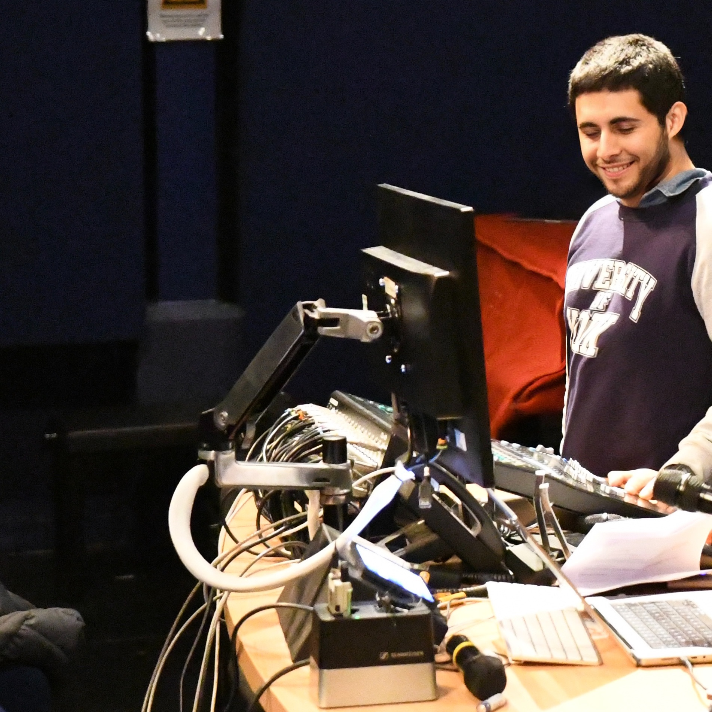
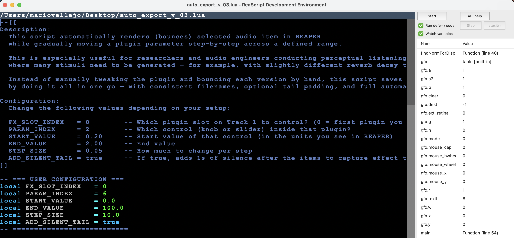
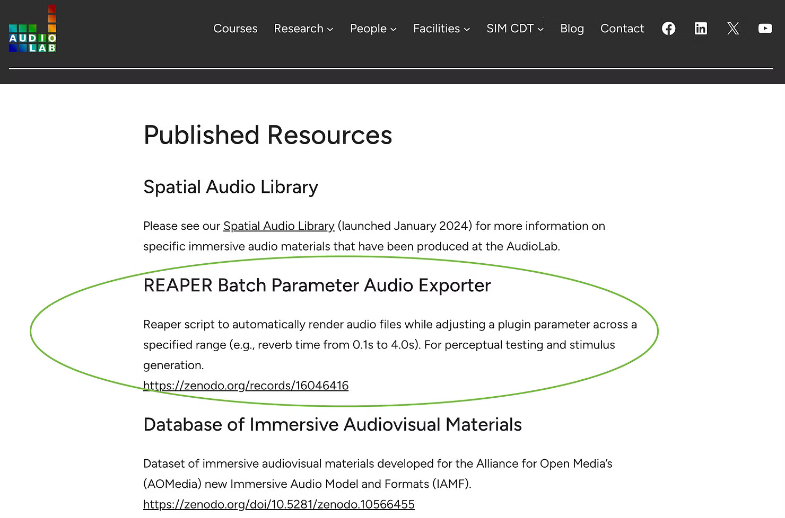

mariovallejoacademic.github.io
A WEBSITE TO SHOWCASE MY LATEST WORK IN AUDIO AND MUSIC TECHNOLOGY.
About me
I am Mario Alberto Vallejo Reyes, a Research Assistant in the Audio Lab at the University of York (UK). I design controlled listening tests, manage data collection and analysis, develop audio signal-processing workflows, and co-author peer-reviewed publications.
I hold an MSc in Audio and Music Technology (University of York), an MSc in Educational Technology (Universidad Da Vinci), and a BSc in Audio Engineering (SAE Institute Mexico). My research investigates psychoacoustic phenomena—recent work includes a validation study of soft-clipping effects (AES Latin American Convention 2024) and a MIDI-based analysis of Mexican folk vocal melodies (arXiv:2503.24243).
Over the past decade I have engineered recordings in professional studios, contributed to a Latin Grammy–nominated project, and mixed Dolby Atmos tracks featured on Apple Music. My credits appear on productions with almost two billion streams, and my VR-based interactive music system represented York at Game Republic 2024. I am Avid-certified in Pro Tools (levels 101 and 110), hold a Producer Certificate in Ableton Live, and am Waves Audio certified.

Portfolio
Research
Coding
Distinctions
Interactive Systems
Production
Teaching
← Back to Portfolio
Abbey Road Education Talk
Distinctions • Abbey Road Studios, Studio Three • London • August 22, 2025
I was honoured to be invited to present at Abbey Road Studios during the Audiomovers Educators Advisory Group, a day that brought together audio educators worldwide. I shared a class case study we run at the University of York, led by Prof. Liam Maloney with me as teaching assistant: teaching analog mixing via on-site streaming.
Traditional approaches to teaching analog mixing often require splitting large classes into multiple small sessions, which can lead to repeated deliveries, teacher fatigue, limited visibility around the console, and constant interruptions that prevent the mixer from reaching “the zone.” As a result, students often miss the chance to experience an authentic, uninterrupted mixing process.
How it works: the mix takes place on an analog console in a studio, while the students listen from a lecture theatre. High-quality audio is streamed, and video feeds from the DAW and cameras are switched at the console via a small MIDI controller. A moderator in the theatre handles Q&A independently, answering questions in the room while the mixer continues uninterrupted.
Why this is useful: students observe a complete mix in context, ask questions in real time through the moderator without disrupting the session. The same class model also adapts to recording technique, production walkthroughs, and spatial-audio demonstrations.
Many thanks to John Krivit for making this possible.
← Back to Portfolio
Judge at AES Europe 2025, Warsaw, Poland
Distinctions • AES Europe Convention • Warsaw, Poland • June 4, 2025
I served as a judge for Category 4 (Sound for Video) in the student competition at the Audio Engineering Society (AES) Europe Convention 2025 in Warsaw, Poland. The competition brought in audiovisual submissions from students worldwide, evaluated in a professional 5.1 studio since several mixes were delivered in immersive formats.
My assessments focused on mix quality, frequency balance, spatial design, dynamics control, synchronization, technical execution, and overall creative approach. Scoring and written evaluations were completed prior to the convention.
During the event, I joined the judging panel for a public 5.1 playback of the four finalists, offering live feedback over microphone to both the audience and the finalists. I also took part in the award ceremony immediately after the session.
This participation reflects my ongoing involvement in audio education, supporting environments where students share work and receive structured, standards-based critique.
← Back to Portfolio
Mixing “Estúpido” in Dolby Atmos — Apple Music Hip-Hop in Spatial Audio
Production • Apple Music — Hip-Hop in Spatial Audio
I mixed “Estúpido” by Mexican hip-hop artist Adán Cruz in Dolby Atmos. The track was featured in Apple Music’s official
Hip-Hop in Spatial Audio playlist — a curated selection that includes artists such as Feid, Bad Bunny, Future, Lil Baby, Jhayco, Gunna, and Offset.
Screen recording of Apple Music’s “Hip-Hop in Spatial Audio” playlist with “Estúpido” featured.
The mix involved adapting the original stereo session to an immersive format while maintaining vocal presence, low-end control,
and overall clarity. I focused on spatial placement that adds dimension without compromising the directness of the performance,
while ensuring a clean stereo fold-down.
Being selected for a major editorial playlist highlights the level of technical precision expected in commercial Atmos releases.
While my research centers on auditory perception and spatial audio, I remain active in production to stay aligned with current
workflows and creative standards.

← Back to Portfolio
ReaScript Automation & Batch Export Tool for REAPER
Coding • University of York AudioLab • 2025
This custom ReaScript lets you automatically locate and control any plugin parameter in REAPER by name, define its value range,
and export audio files with incremental parameter steps — all in one automated process.
Demonstration: the parameter is stepped automatically and audio files are batch-exported.
Originally developed for my research on reverberation perception, this tool generated large batches of audio stimuli with stepped
reverb decay times and direct-to-reverberant ratios (DRRs). Scripting the process saved hours and ensured consistent, reproducible
conditions across exports.
The tool is included in the University of York AudioLab’s published resources, alongside utilities used in ongoing research.
It consists of two scripts — one to locate plugin parameters by name (REAPER maps them internally by number), and another to set
parameter ranges and handle batch export. A README with usage instructions and a demo video are included, making it useful beyond
this specific study.

AudioLab published resources page featuring the automation tool.
Use cases include music-perception studies, generating large audio datasets, or teaching — e.g., comparing perceptual effects of
different plugin parameters.
← Back to Portfolio
Interactive Music System — Debussy in Virtual Reality
Interactive Systems • Game Republic 2024 • Staffordshire University, UK
I. Introduction
I've developed a virtual reality application that offers a novel approach to experience music.
This interactive music system reimagines the compositions of Claude Debussy through modern technologies.
 Users at Game Republic 2024 enjoying the experience of my Interactive Music System.
Users at Game Republic 2024 enjoying the experience of my Interactive Music System.
II. Key Features
- Immersive Experience: Users explore a virtual museum environment, interacting with its elements.
- Real-time Audio Interaction: The system responds to user movements within the virtual space, adjusting audio playback in real time.
- Technical Integration: Unity for the 3D environment and VR interactions; Pro Tools and virtual analog synths for audio production and Debussy re-creations; MATLAB for impulse-response processing to simulate acoustic spaces.
III. Recognition
This project was showcased at Game Republic 2024, hosted by Staffordshire University in the United Kingdom.
I was selected to represent the University of York at this event, alongside my classmate Daniel (who presented a separate application).
 At Game Republic 2024, Staffordshire University. L–R: Lecturer Michael, myself, fellow York student Daniel, and Lecturer Joe.
At Game Republic 2024, Staffordshire University. L–R: Lecturer Michael, myself, fellow York student Daniel, and Lecturer Joe.
IV. Available Resources
- Walkthrough Video: Demonstrates the Interactive Music System, showcasing user experience and key features. YouTube Link
- Technical Report: In-depth report covering design and implementation (PDF). Download Link
- Try It Yourself: Playable application for Pico VR headsets (.apk). Download Link
← Back to Portfolio
Music Production Impact and Selected Work
Production • Selected Discography and Achievements
I. Professional Impact
Over the past decade, the songs I’ve mixed, mastered, or recorded have amassed 1.8 billion verified streams across Spotify, Apple Music, YouTube, and other major streaming platforms.
Muso.ai ranks me in the top 2 % of each discipline:
- Mastering engineers
- Mixing engineers
- Recording engineers
 1.8 billion streams across releases I’ve mixed, mastered, or recorded — placing my credits in Muso.ai’s top 1 %.
1.8 billion streams across releases I’ve mixed, mastered, or recorded — placing my credits in Muso.ai’s top 1 %.
II. Certified Releases
| Certification |
Tracks |
Approx. streams |
| 4 × Platinum | 1 | ~400 M |
| 2 × Platinum | 2 | ~500 M |
| 3 × Gold | 2 | ~30 M |
| Gold | 4 | ~10 M |
 My Platinum & Gold track certifications by stream count.
My Platinum & Gold track certifications by stream count.
III. Selected Works
The following two productions showcase different aspects of my work. One focuses on experimental engineering techniques, and the other on full creative and technical control from demo to final master. I update these periodically to reflect the range of my production experience.
Kódigos – Dinzagroove
This experimental production features renowned Latin American touring musicians. The track breaks traditional structures with complex polyrhythms, unconventional scale choices, and a form centered around multiple solos. I served as recording engineer and editor, working with top-end gear (Avalon, Neve, Neumann, AKG), and used a section-specific quantization method to keep natural timing while improving precision.
Me Gustas – Reno Rojas ft. Monsieur Louf
Starting from a simple ukulele and vocal demo, I handled co-composition, arrangement, vocal production, recording, mixing, and mastering. I brought in session musicians for acoustic guitar, electric guitar, and percussion. The final version has reached over 250 000 streams.